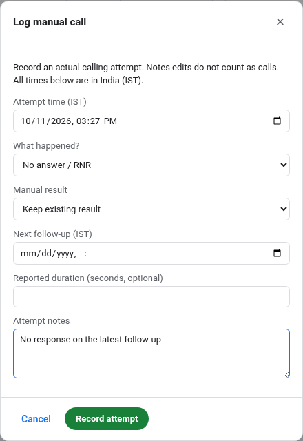
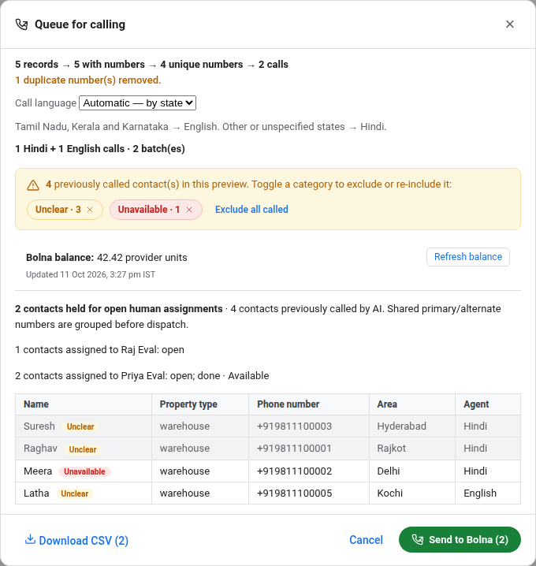
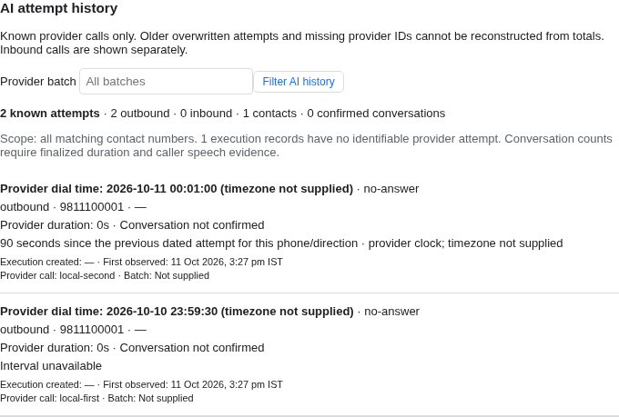
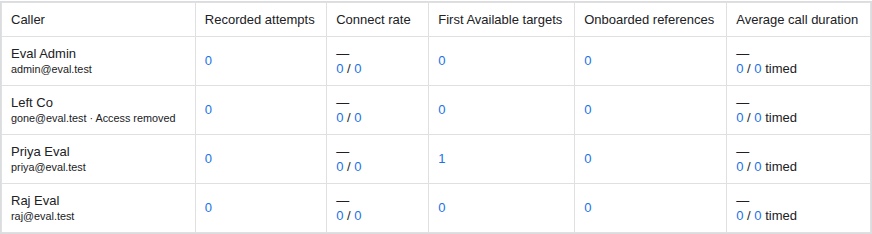

Protect caller work
Bolna push and Queue CSV exclude open human-owned contacts. Shared primary and alternate numbers are grouped.
Calling ownership, follow-ups, history and reporting—updated across the 22-item handoff and both review rounds.
Bolna push and Queue CSV exclude open human-owned contacts. Shared primary and alternate numbers are grouped.
Done needs a logged call. Retryable work stays open, with an explicit Exhausted closure and required reason.
Legacy Done rows remain editable. Historical warehouse references stay visible; corrections preserve chosen results.
Migration 015 can resume after failure. Reconciliation commits bounded pages. Provider-clock intervals now display.
Includes the remaining contact filters, follow-up labels, city aliases, legacy onboarding, search behavior and architectural cleanup. Broader analytics remain the agreed v2 scope.
Prepared against base revision fd5ceb1. No production writes, live calling or deployment were performed. The accompanying Markdown changelog and deployment runbook contain the technical details.
A logged attempt records what happened, when it happened and any next follow-up. Notes edits do not count as calls.

RNR, busy, switched off, callbacks and awaiting confirmation cannot be closed through the old Result + Mark done path. A caller can choose Exhausted, explain why in notes, then mark Done. No automatic attempt cap.
Keep existing result preserves the dropdown choice. Correcting an older call changes the current result only if that call still supplies it. Row editing waits for the refreshed version after logging.
Primary and alternate phones are checked together. The same callable set drives live dispatch and the CSV download.

Fresh check: CSV download rechecks owners and reservations. Dispatch loads expensive metadata before taking the allocation lock, then rechecks contact numbers and ownership before reserving calls.
Unassigned excludes contacts with open or completed assignments; dropped-only contacts qualify. Never assigned and completed history also match shared phones. Round-robin continues across batches and keeps work already held by selected callers.
The grid expands into a readable attempt history. Unqualified provider timestamps now sort correctly and show intervals without assuming they are UTC or IST.

Unqualified values display with “timezone not supplied.” Intervals compare the same phone, direction, provider and clock basis. Zoned and unqualified values are never subtracted from one another.
One merged row represents each identified dial. Repeated deliveries do not add calls. Inbound, outbound and confirmed conversations stay separate. Missing IDs and overwritten retries remain unknown.
Webhooks and reconciliation share number/string/null handling for optional duration and retry metadata. Reconciliation commits 250 executions per transaction and keeps reservations after partial failure.
Read-only sample: 20,000 stored payloads, with no supplied timezone. Local-clock intervals cover this shape; confirm the timezone against known calls for absolute dial times.

Recorded calls, connect rate, first Available targets, onboarded references and average call duration. The query builds only these measures. Self-reported duration includes coverage; historical unlogged calls remain unknown.
Notes and results remain editable without inventing an attempt or replacing an unchanged old reference. Completion checks run when a row becomes Done.
New or changed IDs must be positive integers. Old non-placeholder references stay visible and count where dated evidence supports them, with quality flags. External existence is not checked.
Safe legacy call-row Added/WH values migrate only to the exact call assignment. Conflicting or unmatched originals stay visible and exportable. No caller or verification date is invented.
Assignments shows disposition, due date and Exhausted closure. City search covers 13 explicit alias pairs and urban/city/district suffixes. Fuzzy Calls search uses identifying fields; notes and transcripts retain exact search.
Balance-low does not feed Raw call history, last status or Already called. Calls retains explicit access to blocked executions. Legacy Called By is read-only and initially hidden.
1,700 assignments contained 61 warehouse references and zero non-integer references. 15,328 call rows contained no warehouse references. The audit printed aggregate counts only and changed no records.
| Change | Result |
|---|---|
| Migration 015 | Retryable function DDL; recovery runs in 250-row transactions. A real interrupted runner test now passes on retry. |
| Migration 018 | Transition-only Done checks, explicit Exhausted closure, legacy-reference preservation, provider-clock ordering and removal of obsolete tables. |
| Indexes 017 / 019 | Concurrent builds with retry handling. Identity search is separate from exact transcript/note search. |
| Storage cleanup | Unused contact claims, database wallet cache and duplicate immutable delivery ledger removed. Live mappings enforce ownership; one merged row retains each dial. |
| Wallet / Team | Process-local 60-second cache and bounded provider timeout. Five default metric branches; unused Team JSON endpoint removed. |
npm run db:migrate through migration 019, then deploy the app.Next.js 15 → 16.4.0 is bundled with React 19 and Webpack flags. Verify the Node runtime and hosting adapter. Old call-row writes are retired; use assignment edits. There are no down migrations. Earlier successful migrations remain committed after a later failure.
Full procedure: docs/DEPLOYMENT.md. No maintenance SQL, live provider calls or production migration was executed for this handoff.
| Stage | Final result |
|---|---|
| TypeScript + unit tests | Passed · 100/100 tests |
| Database / API integration | 210/210 passed |
| Migration rehearsals | 4/4 passed |
| Production build | Passed |
| Full production browser suite | 204 passed · 0 failed · 2 volume-only skips |
| Synthetic performance workloads | 19/19 completed |
| Separate production volume browser | 2/2 passed |
The benchmark uses 50,000 source rows, 10,000 calls and 5,000 assignments in an isolated local database. It is not a production SLA or production-volume migration rehearsal. Screenshots show synthetic contacts; provider interactions are mocked or use fake credentials.
Representative staging migration and restore; live provider timezone, retry-chain and agent checks; production traffic measurements. Unlogged history, external warehouse existence and the v2 analytics dashboard are not claimed as completed.
Implementation coverage below follows the agreed scope. External acceptance limits are recorded on page 7; H05 retains its explicit v2 allowance.
| Item | Delivered behavior |
|---|---|
| H01 | Shared-phone deduplication in allocation, Bolna push and eligible CSV |
| H02 | Raw manual call history |
| H03 | Ownership, completed-contact history and AI preview context |
| H04 | Multiple categorical filter selections |
| H05 | Source city; broader dashboard explicitly deferred to v2 |
| H06 | Known attempts, readable timestamps and provider-clock intervals |
| H07 | Bounded reads, matching indexes and synthetic-volume validation |
| H08 | Wallet balance with cache, timeout and visible failure states |
| H09 | Separate AI and manual results |
| H10 | Manual and AI batches, metrics, filters and exports |
| H11 | Column visibility, narrower defaults and five-measure Team view |
| H12 | Jump-to-page controls |
| H13 | Balance blocks excluded from default calling activity |
| H14 | Legacy Called By labelled, hidden by default and read-only |
| H15 | Size, onboarding, city aliases and rent-mentioned filters |
| H16 | Clear Needs review explanation and filter |
| H17 | Retry work stays open; explicit Exhausted closure with reason |
| H18 | Integer IDs for new verification; substantive Unclear closure |
| H19 | Completed history and ownership-checked reopening |
| H20 | Workloads and continuing round-robin assignment |
| H21 | IST date ranges, five measures and evidence/CSV on demand |
| H22 | Unassigned excludes open/completed contacts across shared phones |
Companion files: BOLNA_DB_FIXES_CHANGELOG.md, BOLNA_DB_FIXES_PLAN.md, docs/HANDOFF_COMPLETENESS_AUDIT.md and docs/DEPLOYMENT.md.